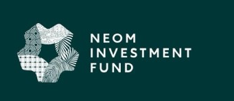
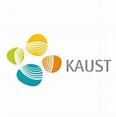
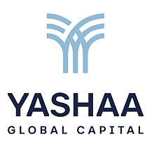
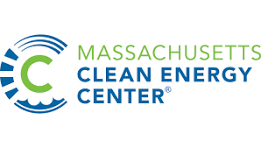
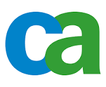

Arif Padaria — Founder, Investor and Venture Advisor.
Arif Padaria is the Founder of Faris Capital and an Independent Global Advisor to growth-stage technology ventures and institutional capital partners.
Over three decades, Arif has Built, Financed and Scaled technology ventures across the United States, Europe, the Middle East and India — operating as Founder, Investor and Corporate Development Executive.
Arif specializes in helping ventures transition from early traction to durable global scale while aligning them with long-horizon capital.
Experience Snapshot
Sovereign & Strategic Capital
Directed $500M+ in venture investments and strategic partnerships across AI/ML, fintech,
cybersecurity, advanced materials, mobility, sports tech and infrastructure technologies.
Institutional Venture Capital
Senior roles across global VC platforms including TVM Capital, Microsoft Strategic
Investments and Pilot House Ventures.
Founder & Operator
Built and exited enterprise software ventures; led IPO strategy and complex capital
structuring initiatives.
Cross-Border Ecosystem Experience
Designed commercialization and venture scaling initiatives across public-private and
sovereign-backed environments.
Select Experience
Representative Platforms and Institutions.





Philosophy
Durable venture scale requires:
Capital Alignment
Growth capital structured to match venture stage and long-term objectives.
Strategic Partnerships
Alliances that extend beyond capital into operational scale and market access.
Institutional Discipline
Governance structures that support scaling without sacrificing founder vision.
Cross-Border Execution
Deep experience navigating regulatory, cultural, and operational complexity across markets.
Balanced Velocity
Speed with resilience—building sustainable businesses, not fragile hypergrowth.
Faris Capital integrates advisory and capital coordination to enable ventures to achieve durable global scale.
Strategic Thinking
Regular investment theses on where value forms in venture-backed technology at scale. Updated frameworks on AI, capital markets, and organizational architecture.